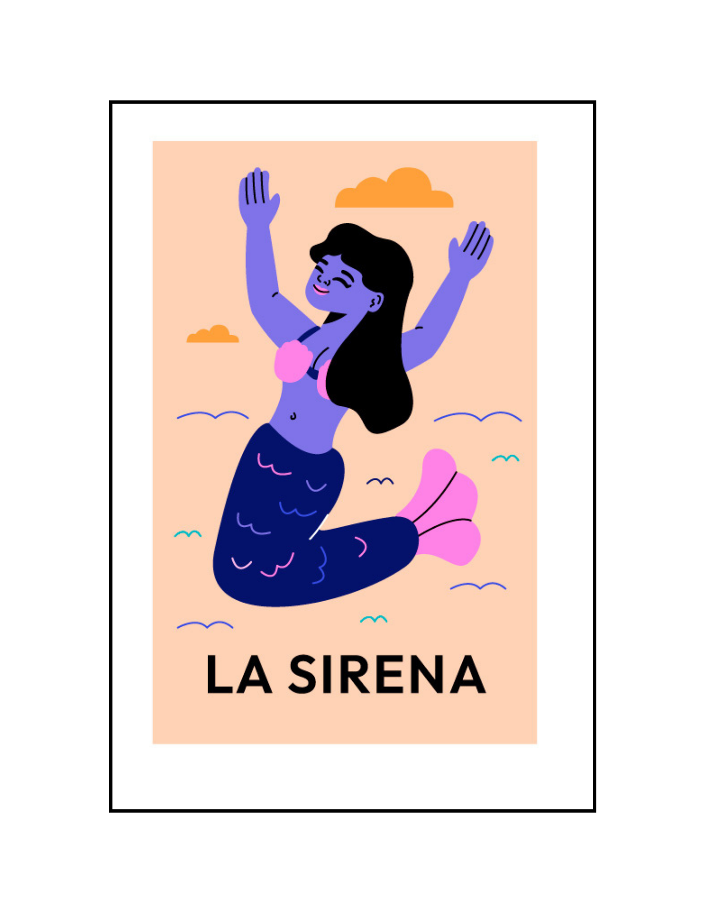

|

LA SIRENA
|
'Sirenas encantadoras, que en el agua nadar. Susurran sus cantos, melodías celestiales'
With shining hair, like golden threads, Their shining bodies, arouse joy. With their deep eyes, like the infinite sea, they seduce hearts, creating a beautiful bond. They dance softly, to the rhythm of the waves, Provoking sighs, in all souls. Their graceful movements, full of magic, intoxicate with love, leading to fantasy. On starry nights, they emerge to the coast, With their bewitching song, which makes you fall in love at the end. Enchanting and ethereal, they dwell in the depths, Awakening in us, subtle clarities. Sea mermaids, mythological beings, keep secrets, between seas and colic. They dream of leaving their seafaring home, And wandering on land, in a new beginning. O beautiful mermaids, full of mystery, They captivate us with their voice, in a sweet captivity. But despite its charm, it must be remembered, that its home is in the sea, in its vast and saline embrace.